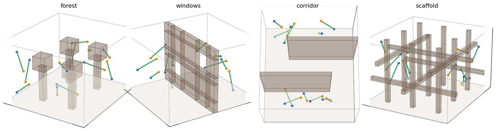
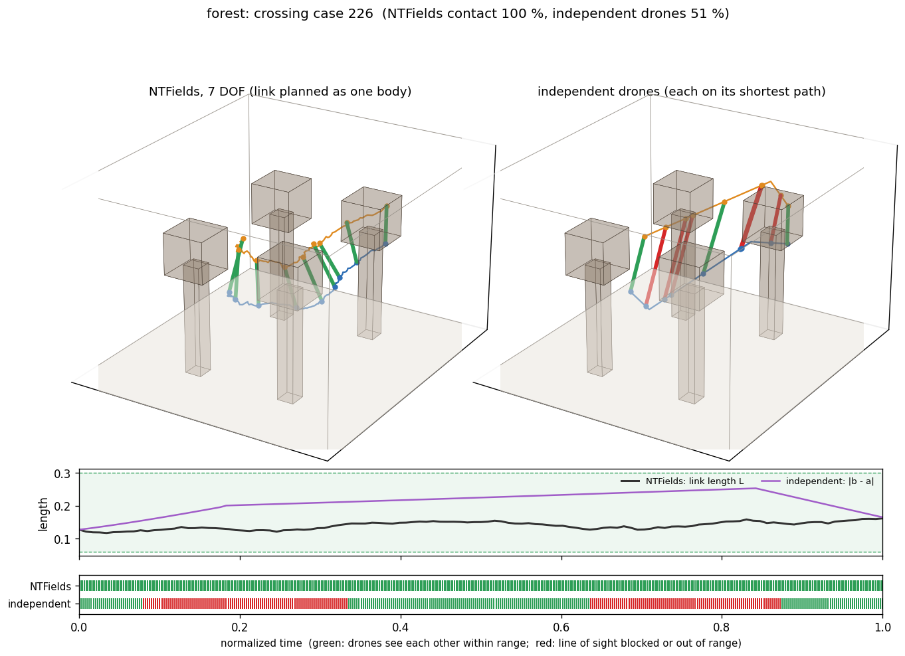
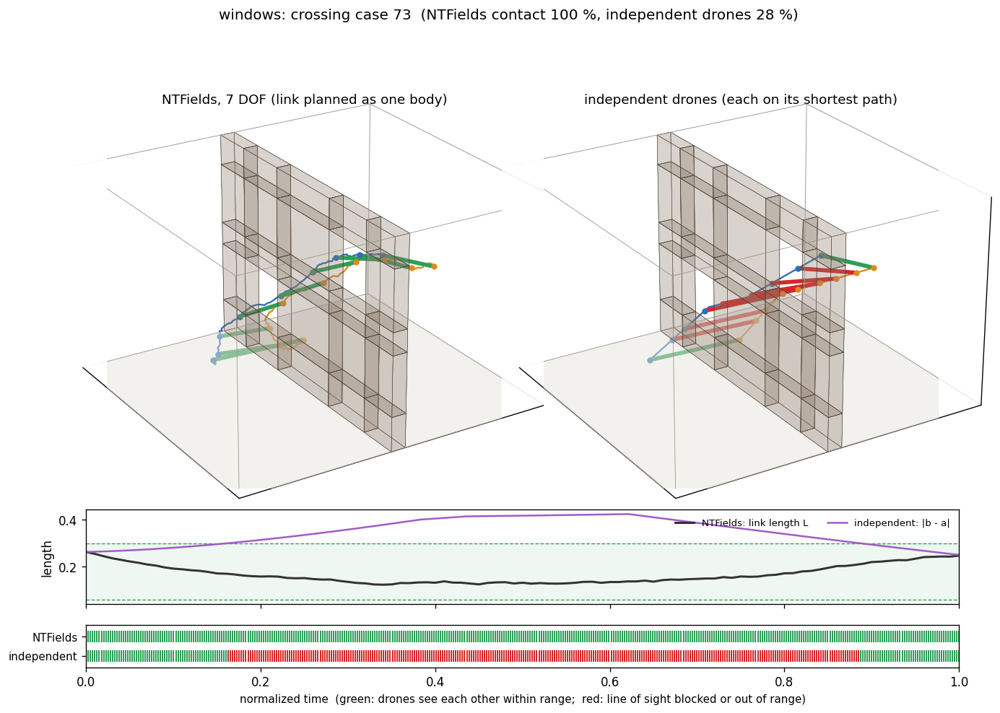
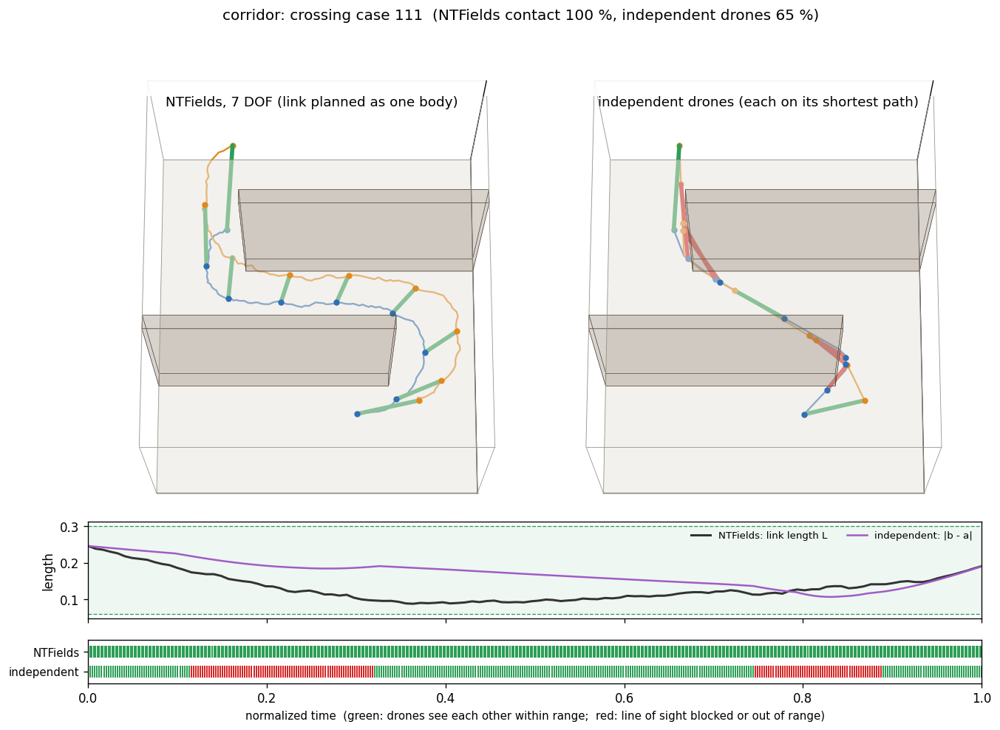
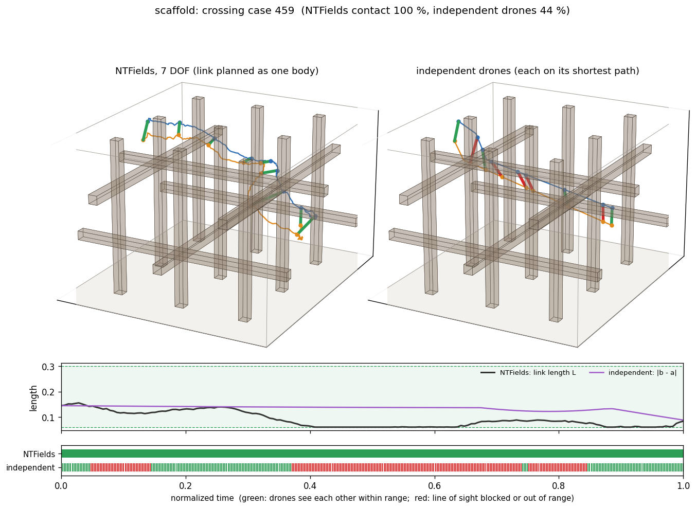

Two drones fly through a scene and must keep their radio link: see each other and stay in range. We plan them as one body, a box from drone a to drone b that stretches and shrinks between 0.06 and 0.30 (room units), so a pose is drone a's SE(3) pose plus one length. Regular metric NTFields, trained on speeds re-sampled in these 7 DOF, solves 68 % of random link queries with the link valid the whole way, against 48 % for independent drones and 40 % for the direct motion. On the long crossing tasks it reaches only 26 %: on long queries the planner stalls in local minima of the learned field. Making a fifth of the training pairs span the room fixes much of that in the forest and corridor, in all three seeds: their crossings rise from 16 to 54 % and from 32 to 67 %, their random queries from 71 to 83 % and from 71 to 84 %. In the scaffold it trades random queries for crossings (random 64 → 59 %, crossings 13 → 23 %). In the windows scene training fails in two of the three seeds (at most 0.7 % solved), so the share is not yet safe to make part of the recipe.
The link is the box [−w/2, w/2]² × [0, L] in its own frame. Drone a sits at the body origin, the centre of the end face z = 0; drone b sits at (0, 0, L), the centre of the far face. A pose is (t, R, L): t is drone a's position, R turns ez onto the direction from a to b, and L = |b − a| is the length from a outwards. The SE(3) part embeds drone a and the direction b − a; the seventh coordinate is the length.
The box has width w = 0.02 (4.4 room units, a drone's size and the width of the line-of-sight beam). The length is limited to [0.06, 0.30]: the drones stay at least three widths apart and within radio range. If the box never touches the scene, neither drone hits anything and nothing ever blocks their line of sight. The limits act as walls of the seventh coordinate, exactly as the room walls do for the translation, and the planner also clamps L into them.
The networks read the chart x = (t, rotvec(R) / 2π, L): the SE(3) chart used by every model in this repository plus the length in room units, so stretching the link by dL costs as much as moving drone a by dL. The clearance of a pose is exact (oriented box against axis-aligned boxes) and folds in the length limits:
These are the formulas of the existing SE(3) preprocessing, with the box of each pose's own length. The clearance normal, used by NTFields' normal-alignment term, is the 7-d gradient of c; its length component is ζ n·Rez for a witness point at fraction ζ of the box (checked against finite differences). Per scene, 800k training pairs: x0 uniform (drone a in the room, R uniform, L uniform) inside the band 0.001 < c < 0.05, and x1 = x0 moved in the 6-d SE(3) chart as in the existing sampler, with a fresh uniform length. 28–44 % of the band samples sit at a length limit rather than near an obstacle.
The model is the original metric NTFields, unchanged except that its input is 7-d: the full recipe of the camera test (TD and normal-alignment terms 1e-3), 8000 epochs, three seeds. Planning uses the same MPPI as every SE(3) evaluation here (50 samples, horizon 5, step 0.015), with L clamped to its limits.
All four use the room of env3 (198 × 138 × 218 units). Each breaks the line of sight between two drones in a different way.

Two test sets per scene, 1000 cases each, both ends at least 0.02 from the scene and from the length limits. Random draws both poses uniformly. Crossing is the scene's signature task: both drones start in one region and end in the other (in front of the trees and behind them; front room and back room; first leg and last leg; the two sides of the lattice). Every case is certified solvable in the 7-d space with the link kept valid: a 60k-node roadmap per scene, built on the GPU with the exact clearance, solved all 8000 cases. The certified paths are the proof that a link-keeping plan exists, not a competitor.
Independent drones is the link-unaware baseline. Each drone flies its own shortest collision-free path; both leave together and arrive together. We then score the link along the way. The direct motion moves drone a in a straight line, slerps the orientation and interpolates the length.
Share of cases solved with the link valid the whole way: the drones reach their goals, never touch the scene, always see each other and keep an allowed distance. NTFields is the mean of 3 seeds with a ± one-standard-deviation whisker. Hover a row for the failure split.
| Scene · set | Direct motion | Independent drones | NTFields (7 DOF) | Collision | Stall | Seeds |
|---|---|---|---|---|---|---|
| forest · random | 47 | 55 | 70.8 ± 2.2 | 10 | 26 | 3 |
| forest · crossing | 12 | 24 | 15.7 ± 3.1 | 29 | 83 | 3 |
| windows · random | 51 | 55 | 66.7 ± 2.3 | 24 | 25 | 3 |
| windows · crossing | 2 | 21 | 43.1 ± 4.9 | 48 | 39 | 3 |
| corridor · random | 33 | 38 | 71.4 ± 2.6 | 21 | 25 | 3 |
| corridor · crossing | 0 | 3 | 32.3 ± 4.1 | 57 | 63 | 3 |
| scaffold · random | 27 | 42 | 63.6 ± 1.3 | 27 | 23 | 3 |
| scaffold · crossing | 2 | 11 | 13.2 ± 5.2 | 52 | 79 | 3 |
How independent shortest paths lose the link. Contact means the drones see each other within range; the last column also requires the minimum separation.
| Scene · set | Contact, % of time | Line of sight lost, % of cases | Out of range, % of cases | Too close, % of cases | Link valid all the way, % of cases |
|---|---|---|---|---|---|
| forest · random | 93 | 31 | 0 | 16 | 55 |
| forest · crossing | 89 | 63 | 1 | 25 | 24 |
| windows · random | 96 | 23 | 6 | 26 | 55 |
| windows · crossing | 90 | 50 | 14 | 39 | 21 |
| corridor · random | 95 | 44 | 0 | 32 | 38 |
| corridor · crossing | 90 | 90 | 0 | 46 | 3 |
| scaffold · random | 91 | 42 | 0 | 22 | 42 |
| scaffold · crossing | 87 | 78 | 0 | 29 | 11 |
One crossing case per scene that NTFields solves, chosen where the independent drones keep the link for the shortest time. Left: the NTFields plan, with the link drawn at evenly spaced moments (drone a blue, drone b orange). Right: the independent drones, with the link red wherever the drones cannot see each other. Below: the link length over time against the allowed band, and the contact timeline of both.




Success falls with the distance drone a has to travel, pooled over scenes, sets and seeds. Hover a point for the numbers.
The variant that changes the most, a fifth of the training pairs long-range, against the recipe: one dot per training seed, the same cases for both. Hover a row for the numbers; the table below lists every variant.
| Scene · set | 8000 epochs (seeds) | 4000 epochs (seeds) | Without TD / normal terms (seed 0) | Recipe, seed 0 | Band on scene clearance (seed 0) | Long-range pairs, half (seed 0) | Long-range pairs, a fifth (seeds) |
|---|---|---|---|---|---|---|---|
| forest · random | 70.8 ± 2.2 | 68.4 ± 3.1 | 0.2 | 72.9 | 75.0 | 14.0 | 82.9 ± 1.6 |
| forest · crossing | 15.7 ± 3.1 | 13.1 ± 2.8 | 0.0 | 13.1 | 13.7 | 0.3 | 53.7 ± 0.6 |
| windows · random | 66.7 ± 2.3 | 62.0 ± 3.0 | 0.3 | 69.9 | 71.9 | 1.1 | 23.1 ± 31.7 |
| windows · crossing | 43.1 ± 4.9 | 32.0 ± 4.5 | 0.0 | 49.5 | 51.7 | 0.0 | 12.6 ± 17.9 |
| corridor · random | 71.4 ± 2.6 | 65.7 ± 4.5 | 0.5 | 72.9 | 74.6 | 84.5 | 83.5 ± 2.2 |
| corridor · crossing | 32.3 ± 4.1 | 19.2 ± 7.6 | 0.0 | 38.0 | 41.0 | 72.1 | 66.8 ± 3.2 |
| scaffold · random | 63.6 ± 1.3 | 59.2 ± 0.8 | 59.8 | 65.4 | 62.1 | 32.3 | 59.5 ± 1.9 |
| scaffold · crossing | 13.2 ± 5.2 | 11.8 ± 5.5 | 15.8 | 19.7 | 17.4 | 6.3 | 23.3 ± 2.6 |
Against the recipe on the same cases: seed 0 against seed 0, except a fifth of the pairs long-range, which was trained with all three seeds.
models/drone_link/ (geometry, scripts, README, experiment log), scenes dataprocessing/make_link_scenes.py, trainer train/train_metric_link.py, tests tests/test_drone_link.py (8 tests).datasets/3dshape/data/link_<scene>, test sets testing_data/3dshape/link_<scene>_{std,cross}, runs Experiments/drone_link/, results results/drone_link/ (summary in summary/summary.md).